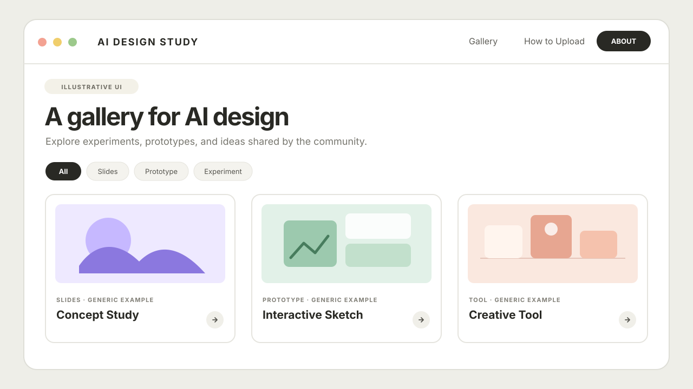
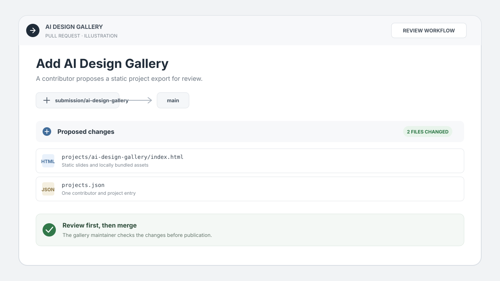
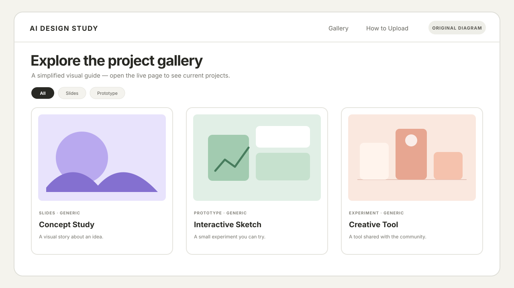

각자 만든다
익숙한 AI 도구로 프로젝트를 만들고, 원본 작업은 각자 환경에 그대로 둡니다.
01 / 12


AI DESIGN STUDY / NOV 2026
HOW I BUILD + HOW TO USE THE GALLERY
@SOO
01 · The idea
각자 만든 AI 프로젝트를 한 곳에 모아, 스터디 밖에서도 열어볼 수 있게.
익숙한 AI 도구로 프로젝트를 만들고, 원본 작업은 각자 환경에 그대로 둡니다.
완성된 프로젝트를 웹에서 바로 열 수 있는 파일로 내보내고, 내 경로에서 확인합니다.
변경 내용을 검토한 뒤 갤러리에 연결합니다. 병합된 결과는 GitHub Pages에 공개됩니다.
02 · How it started
프런트엔드 갤러리와 자동 업로드 서버를 한 번에 연결하려고 했습니다.
 Next.js
Next.js
 React
React
 TypeScript
TypeScript
작품 카드, 카테고리, 검색과 제출 안내를 제공하는 갤러리 웹사이트.
ZIP을 서버에서 받아 파일 저장소와 메타데이터 DB에 연결해 자동 등록하려는 시도.
업로드 API, 파일 저장, DB 연결을 함께 안정화하는 일이 갤러리의 핵심보다 커졌습니다.
03 · The decision
서버 업로드를 더 복잡하게 만들기보다, 이미 쓰는 GitHub 흐름에 제출을 얹었습니다.
별도 업로드 API와 파일 저장소, DB 연결을 계속 운영해야 합니다.
연결 이슈가 생기면 참가자의 제출도 막힙니다.
PR에 파일 차이가 남고 리뷰와 자동 검사가 한곳에 모입니다.
승인 후 병합하면 GitHub Pages가 정적 사이트를 공개합니다.
새 업로드 계정이나 별도 참가자 서버 없이, 공개 가능한 파일만 제출하고 사람이 검토할 수 있습니다.
참가자가 정적 내보내기를 직접 해야 합니다. 서버·DB·비밀키가 꼭 필요한 앱은 그대로 올릴 수 없습니다.
04 · The vocabulary
처음에는 이 다섯 단어만 알아도 제출 흐름을 따라갈 수 있어요.
파일과 변경 이력을 함께 보관하는 프로젝트 공간.
원본 저장소를 내 계정에 복사. 권한이 없을 때 사용.
main을 건드리지 않고 독립적으로 작업하는 경로.
수정한 내용을 의미 있는 단위로 저장한 시점.
내 변경을 원본 main에 합쳐달라고 제안하고 검토받기.
05 · GitHub, visually
초록 점은 내 변경 내용입니다. branch에서 commit하고, PR 검토가 끝나면 main에 합쳐집니다.
06 · One submission
새 프로젝트마다 새 branch와 PR 하나. 병합 전에는 갤러리에 공개되지 않습니다.
index.html과 필요한 파일을 로컬에서 준비하고 테스트.
projects/<slug>/ 아래에 완성본만 배치.
projects.json에 프로젝트 정보를 한 항목 추가.
체크와 리뷰 후 merge. GitHub Pages가 게시.
git switch -c submission/my-project git add projects/my-project projects.json git commit -m "Add my project" git push -u origin submission/my-project
Add this project information to projects.json when preparing the submission.
title · author · githubUsername · category · tools · slug · createdAt
Use your exact GitHub username so the gallery Contributor link works correctly.

08 · Agent prompt
프로젝트를 열어둔 코딩 에이전트에게 이렇게 요청하고, 준비된 변경을 직접 확인합니다.
Help me submit the project open in my workspace to AI Design Study. Read AGENTS.md first. Keep my project intact. Prepare and test a static export, then add only: - the export under projects/<slug>/ - one projects.json entry with my exact GitHub username Use a new branch, never push to main, and ask before pushing or opening a PR.
Use the actual build/export steps.
Title, author, GitHub username, category, tools.
Review files before any push or PR action.
09 · PR mockup · example only
실제 PR 템플릿 형식의 목업입니다. base는 원본 main, compare는 제출 branch로 둡니다.
Title: My AI Prototype
Author: Your Name
Category: Prototype
AI tools: GitHub Copilot, Figma Make
Project folder: projects/my-ai-prototype
10 · Review and publish
자동 검사는 품질 신호이지 승인 버튼이 아닙니다.
제출 파일 규칙과 메타데이터, 갤러리의 테스트와 정적 빌드를 확인합니다.
기능, 파일 권리, 외부 요청과 공개 적합성을 살피고 필요하면 수정을 요청합니다.
승인된 변경을 main에 병합하면 공개 워크플로가 썸네일을 만들고 게시합니다.
비밀키, 회사 자료, 권한 없는 asset은 올리지 않기.
서버·DB·비밀 API가 필요한 앱은 그대로 동작하지 않음.
체크 통과만으로 자동 병합하거나 승인하지 않기.
11 · Wrap-up
작품을 직접 만들고, 공개 가능한 정적 파일로 준비하고, PR로 함께 검토합니다.
권한이 있으면 원본에서 branch. 권한이 없으면 fork를 재사용하고 프로젝트마다 새 branch.
파일 권한 · 비밀 정보 · 하위 경로 · 정확한 GitHub username · 프로젝트 용량을 확인합니다.